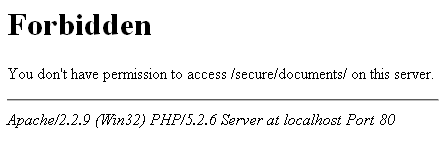
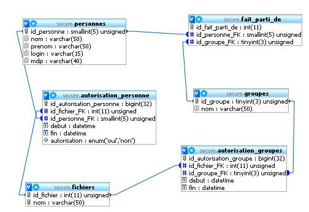

Nous allons voir dans ce tutoriel comment sécuriser un accès à des documents. On trouve beaucoup de sites où sont expliqués les accès sécurisés à des répertoires via des fichiers .htaccess, ou des pages web avec une authentification préalable avec une base de données (MySQL en général). Une technique encore fréquente est de garder l'URL secrète avec des liens compliqués. Toutes ces méthodes ont leurs limites, nous allons ici étudier un concept utilisant plusieurs de ces outils afin de diminuer au maximum les inconvénients de chacun.
Imaginons le contexte suivant :
Je suis le responsable d'un site Internet comportant des documents à diffusion réduite (annuaire des membres, photos, etc.). Je souhaite limiter la diffusion de certains documents à une liste de membres authentifiés. J'ai bien pensé à mettre mes documents dans un répertoire où je ne donne le nom qu'à un certain nombre d'individus, mais ce niveau de sécurité n'est pas suffisant. Nous allons ici développer un système de restriction d'accès qui vérifie l'authentification et les autorisations de la personne avant chaque envoi de document.
Ce tutoriel utilise l'architecture de site suivante : une zone publique accessible à tous et une zone à accès restreint avec les fichiers dont on veut sécuriser l'accès.
La zone publique est le répertoire principal du site.
La zone à accès restreint est le répertoire documents situé dans le sous-répertoire principal.
Ce dossier contient tous les documents et fichiers dont l'accès est réglementé. Son accès en direct doit être interdit. Pour cela, nous utilisons un fichier .htaccess.
Ce fichier comporte une seule ligne :
deny from all
Expliquons ces trois mots (si vous ne parlez pas anglais) :
deny : interdire (l'accès). Nous voulons interdire l'accès à ce répertoire ;
from : depuis. Nous indiquons à qui nous interdisons l'accès en indiquant depuis quel endroit on ne peut pas se connecter ;
all : tous. Depuis tous les endroits, l'accès est interdit. C'est simple l'anglais, non ?
Ce répertoire va également comporter tous les fichiers dont l'accès doit être réglementé. Les formats de ces fichiers peuvent êtres variés (Word, PDF, ZIP, Open Office Document, images, etc.). Il est possible de rajouter les fichiers en fonction des besoins. Vérifions que notre système fonctionne. Ouvrons notre navigateur sur le répertoire, puis sur chacun des fichiers ci-dessus avec une adresse de type : http://localhost/documents/ et http://localhost/documents/fichier.pdfhttp://localhost/documents/fichier.pdf. Ce message (ou un similaire) devrait apparaître :

Ayant plusieurs projets, j'ai mis ce projet dans un dossier secure sur ma machine de développement.
Nous allons stocker les droits des utilisateurs ainsi que leurs comptes d'accès dans une base de données. Cela nous donnera une grande flexibilité quant aux droits. Cette base contient des individus dans la table personnes et les noms des fichiers dans la table fichiers. La liaison la plus simple est de faire une table de jointure qui donne une autorisation à une personne sur un fichier. C'est ce que fait la table autorisation_personne. Si nous avons beaucoup de fichiers et beaucoup de personnes au sein de notre système, la gestion de cette table est fastidieuse. Nous allons donc ajouter un système de groupe, où l'on fait appartenir une personne à un ou plusieurs groupes, puis donner des autorisations à ce groupe. Le système présenté dans le schéma ci-dessous permet de remplir ce cas d'utilisation. Un champ « autorisation » est ensuite ajouté à la table autorisation_personne afin de pouvoir donner une interdiction (valeur « non »), de manière spécifique à une personne appartenant à un groupe dont les membres ont un accès à un fichier spécifique.
Le schéma de la base de données

Génération de la base
Nous allons maintenant créer la base « secure » sur notre serveur de développement. Voici le script de création des tables de cette base de données. Une fois la base de données créée, ce script peut être donné à MySQL pour créer les tables qui vont être utilisées. La manière la plus simple de donner ce script à MySQL, c'est de faire un copier-coller dans l'interface de saisie MySQL de PHPMyAdmin.
CREATE TABLE IF NOT EXISTS `autorisation_groupes` (
`id_autorisation_groupe` bigint(32) NOT NULL auto_increment,
`id_fichier_FK` int(11) unsigned NOT NULL,
`id_groupe_FK` tinyint(3) unsigned NOT NULL,
`debut` datetime default NULL,
`fin` datetime default NULL,
PRIMARY KEY (`id_autorisation_groupe`),
KEY `id_groupe_FK` (`id_groupe_FK`),
KEY `id_fichier_FK` (`id_fichier_FK`)
) ENGINE=InnoDB DEFAULT CHARSET=latin1 AUTO_INCREMENT=1 ;
CREATE TABLE IF NOT EXISTS `autorisation_personne` (
`id_autorisation_personne` bigint(32) NOT NULL auto_increment,
`id_fichier_FK` int(11) unsigned NOT NULL,
`id_personne_FK` smallint(5) unsigned NOT NULL,
`debut` datetime default NULL,
`fin` datetime default NULL,
`autorisation` enum('oui','non') NOT NULL default 'oui',
PRIMARY KEY (`id_autorisation_personne`),
KEY `id_personne_FK` (`id_personne_FK`),
KEY `id_fichier_FK` (`id_fichier_FK`)
) ENGINE=InnoDB DEFAULT CHARSET=latin1 AUTO_INCREMENT=1 ;
CREATE TABLE IF NOT EXISTS `fait_parti_de` (
`id_fait_parti_de` int(11) NOT NULL auto_increment,
`id_personne_FK` smallint(5) unsigned NOT NULL,
`id_groupe_FK` tinyint(3) unsigned NOT NULL,
PRIMARY KEY (`id_fait_parti_de`),
KEY `id_groupe_FK` (`id_groupe_FK`),
KEY `id_personne_FK` (`id_personne_FK`)
) ENGINE=InnoDB DEFAULT CHARSET=latin1 AUTO_INCREMENT=1 ;
CREATE TABLE IF NOT EXISTS `fichiers` (
`id_fichier` int(11) unsigned NOT NULL auto_increment,
`nom` varchar(50) default NULL,
PRIMARY KEY (`id_fichier`),
UNIQUE KEY `nom_unique` (`nom`)
) ENGINE=InnoDB DEFAULT CHARSET=latin1 AUTO_INCREMENT=1 ;
CREATE TABLE IF NOT EXISTS `groupes` (
`id_groupe` tinyint(3) unsigned NOT NULL auto_increment,
`nom` varchar(50) default NULL,
PRIMARY KEY (`id_groupe`)
) ENGINE=InnoDB DEFAULT CHARSET=latin1 AUTO_INCREMENT=1 ;
CREATE TABLE IF NOT EXISTS `personnes` (
`id_personne` smallint(5) unsigned NOT NULL auto_increment,
`nom` varchar(50) default NULL,
`prenom` varchar(50) default NULL,
`login` varchar(15) default NULL,
`mdp` varchar(40) default NULL,
PRIMARY KEY (`id_personne`)
) ENGINE=InnoDB DEFAULT CHARSET=latin1 AUTO_INCREMENT=1 ;
ALTER TABLE `autorisation_groupes`
ADD CONSTRAINT `autorisation_groupes_ibfk_1` FOREIGN KEY (`id_groupe_FK`) REFERENCES `groupes` (`id_groupe`) ON DELETE NO ACTION ON UPDATE NO ACTION,
ADD CONSTRAINT `autorisation_groupes_ibfk_2` FOREIGN KEY (`id_fichier_FK`) REFERENCES `fichiers` (`id_fichier`) ON DELETE NO ACTION ON UPDATE NO ACTION;
ALTER TABLE `autorisation_personne`
ADD CONSTRAINT `autorisation_personne_ibfk_1` FOREIGN KEY (`id_personne_FK`) REFERENCES `personnes` (`id_personne`) ON DELETE NO ACTION ON UPDATE NO ACTION,
ADD CONSTRAINT `autorisation_personne_ibfk_2` FOREIGN KEY (`id_fichier_FK`) REFERENCES `fichiers` (`id_fichier`) ON DELETE NO ACTION ON UPDATE NO ACTION;
J'utilise le moteur InnoDB pour mes bases plutôt que MyISAM, car ce moteur s'assure que les contraintes d'existence des clés externes soient bien respectées. En plus, ce moteur est légèrement plus performant lors de jointures dans les requêtes. Cependant, beaucoup d'hébergeurs (notamment gratuits) ne le proposent pas, car il demande plus d'espace disque. Si vous ne pouvez pas utiliser InnoDB, il vous faudra modifier les requêtes de création avec les adaptations suivantes :
changer ENGINE=InnoDB par ENGINE=MyISAM ;
supprimer les ajouts de contraintes ADD CONSTRAINT... ;
ajouter des index pour optimiser les jointures mentionnées sur le schéma ci-dessus.
serveur.tld par votre serveur (localhost en développement) ;
secure par le répertoire contenant le script de sécurisation ;
1 par l'identifiant du fichier à télécharger.
S'il manque le paramètre d'appel, le script ne peut fonctionner. Il demandera l'authentification, mais ne saura quel fichier vous servir, il vous informera donc qu'un paramètre est manquant.
Présentation globale du code
Maintenant que nous avons préparé notre base de données, nous allons faire un code PHP qui va utiliser cette base. Notre code va utiliser :
les sessions : permettent de mémoriser pendant quelques minutes (généralement 30) au travers de plusieurs page, le contenu de certaines variables ;
l'inclusion d'un fichier de connexion à la base de données : cela permet d'avoir un fichier unique pour l'ensemble du site qui effectue la connexion à la base pour chaque page. En cas de changement de paramètres de connexion, il n'y a qu'un seul fichier à éditer pour l'ensemble du site ;
un switch à trois états réalisés avec les instructions if, elseif et else : ce switch permet de charger une partie de code adaptée, en fonction de l'état où nous sommes. Ces trois états sont :
un utilisateur authentifié demande un fichier,
un utilisateur a rempli le formulaire d'authentification et a validé ce formulaire,
un utilisateur non authentifié demande un fichier, on lui présente le formulaire d'authentification.
Écrivons maintenant cette structure principale du code que nous allons compléter par la suite. Ce code forme la structure du fichier index.php qui est dans le répertoire principal :
<?php
/* Accès sécurisé à des données contenues au sein d'un répertoire spécifique.
*/
// Démarrage de la session qui va contenir le login de l'utilisateur.
session_start();
// Connexion à la base de données.
require 'connexion.php';
// Répertoire contenant les fichiers à accès restreints.
define('REPERTOIRE', 'documents');
/* On a un switch à trois états : un utilisateur connu, un utilisateur en train de
* s'authentifier, un utilisateur à qui on demande une authentification.
*/
if (isset ($_SESSION['user'])) {
// Envoi du fichier demandé.
} elseif (isset ($_POST['submit']) ) {
// Traitement du login et du mot de passe saisis.
} else {
// Demande d'un login et d'un mot de passe.
}
mysql_close();
?>
Connexion
Voici le script de connexion. Il ne présente pas des difficultés particulières, si vous avez suivi les tutoriels d'introduction au langage PHP rédigés par M@teo21 ou sur d'autres sites Internet. Nous le mettrons dans le fichier connexion.php qui se trouve dans le répertoire principal. C'est ce fichier qui est appelé lors de la ligne require 'connexion.php';.
<?php
/* Paramètres de configuration et de connexion à la base de données.
* À personnaliser
*/
$host='localhost';
$user='root';
$pass='';
$db='secure';
/* Connexion à la base de données. */
if ( !mysql_connect($host, $user, $pass) ) {
$retour=FALSE;
} else {
$retour = TRUE;
}
if ( !mysql_select_db ($db) ) {
exit ( 'Impossible de sélectionner la base' . $db);
}
?>
Authentification : demande des informations
Nous allons demander à l'utilisateur de s'authentifier. Pour cela, nous utilisons un simple formulaire HTML. Nous allons compléter par du HTML le code ci-dessus juste après le commentaire adapté de la partie else du switch tri état du fichier index.php. Voici le code du formulaire :
<!DOCTYPE html
PUBLIC "-//W3C//DTD XHTML 1.0 Transitional//EN"
"http://www.w3.org/TR/xhtml1/DTD/xhtml1-transitional.dtd">
<html>
<head>
<title>Authentification</title>
</head>
<body>
<form method="post" action="">
Login : <input type="text" name="login" /><br />
Mot de passe : <input type="password" name="mdp" /><br />
<input type="submit" name="submit" value="Se connecter" />
</form>
</body>
</html>
Authentification : vérification des saisies
Nous vérifions ici la saisie de l'authentification et, selon le cas, affichons un message d'erreur avec un bouton permettant de recommencer la saisie, ou enregistrer le nom de l'utilisateur et rafraîchir la page pour tomber dans le cas non encore complété, à savoir : donner à l'utilisateur le fichier demandé. Ce code s'insère dans le fichier index.php juste après le commentaire : // Traitement du login et du mot de passe saisis.
<!DOCTYPE html
PUBLIC "-//W3C//DTD XHTML 1.0 Transitional//EN"
"http://www.w3.org/TR/xhtml1/DTD/xhtml1-transitional.dtd">
<html>
<head>
<title>Authentification</title>
<?php
$login = mysql_real_escape_string($_POST['login']);
$mdp = mysql_real_escape_string($_POST['mdp']);
$requete = 'SELECT id_personne
FROM personnes
WHERE login = "'.$login.'"
AND mdp = "'.$mdp.'";';
$resultat = mysql_query ( $requete );
$nb_ligne = mysql_num_rows($resultat);
if ($nb_ligne !== 1){
?>
</head>
<body>
<p>Vous n'avez pas été reconnu par le système.<br />
Veuillez réessayer.<br />
Si le problème persiste, veuillez contacter l'administrateur du site.</p>
<form method="post" action="">
<input type="submit" name="Retour" value="Ré-essayer" />
</form>
</body>
<?php
} else {
$ligne = mysql_fetch_assoc($resultat);
$_SESSION['user'] = $ligne['id_personne'];
echo '<META http-equiv="Refresh" content="0"> ';
echo '</head>';
}
echo '</html>';
Envoi du fichier à l'utilisateur
Dans cette partie, le point délicat est l'écriture de la requête déterminant si un utilisateur a le droit au fichier. Le fichier recherché est passé via le paramètre fichier transmis en GET. Ce paramètre contient l'identifiant du fichier. Commençons par décortiquer la requête. Dans ces requêtes, id_fichier sera remplacé par l'identifiant du fichier en base de données, et user par l'identifiant de l'utilisateur qui aura saisi son login et son mot de passe.
-- Nous voulons le nom du fichier.
SELECT DISTINCT (fichiers.nom)
FROM fichiers ;
-- Le DISTINCT permet de ne conserver qu'une ligne
-- si l'on a plusieurs autorisations pour un même fichier.
-- Ajoutons les conditions :
WHERE id_fichier NOT IN (
-- Fichiers interdits
)
AND (
id_fichier IN (
-- Fichiers autorisés personnellement
)
OR id_fichier IN (
-- Fichiers autorisés via un groupe auquel l'utilisateur appartient.
)
)
-- Nous avons la structure de la requête.
-- Pour avoir les identifiants des fichiers interdits, nous faisons la requête :
SELECT id_fichier_FK
FROM autorisation_personne
WHERE autorisation = "non"
AND id_fichier_FK = id_fichier
AND id_personne_FK = user
AND ( debut IS NULL OR debut < now() )
AND ( fin IS NULL OR fin > now() )
-- On remarque au passage que si une date est NULL, cela veut dire :
-- « depuis toujours » ou « pour toujours ».
-- La requête pour avoir les fichiers autorisés personnellement est presque identique :
SELECT id_fichier_FK
FROM autorisation_personne
WHERE autorisation = "oui"
AND id_fichier_FK = id_fichier
AND id_personne_FK = user
AND ( debut IS NULL OR debut < now() )
AND ( fin IS NULL OR fin > now() )
-- Enfin, pour les autorisations de groupe, nous allons utiliser
-- les jointures sur plusieurs tables.
SELECT id_fichier_FK
FROM autorisation_groupes
LEFT JOIN fait_parti_de USING (id_groupe_FK)
WHERE id_fichier_FK = id_fichier
AND id_personne_FK = user
AND ( debut IS NULL OR debut < now() )
AND ( fin IS NULL OR fin > now() )
-- La requête complète est donc :
SELECT DISTINCT (fichiers.nom)
FROM fichiers
WHERE id_fichier NOT IN (
SELECT id_fichier_FK
FROM autorisation_personne
WHERE autorisation = "non"
AND id_fichier_FK = id_fichier
AND id_personne_FK = user
AND ( debut IS NULL OR debut < now() )
AND ( fin IS NULL OR fin > now() )
)
AND (
id_fichier IN (
SELECT id_fichier_FK
FROM autorisation_personne
WHERE autorisation = "oui"
AND id_fichier_FK = $id_fichier
AND id_personne_FK = user
AND ( debut IS NULL OR debut < now() )
AND ( fin IS NULL OR fin > now() )
)
OR id_fichier IN (
SELECT id_fichier_FK
FROM autorisation_groupes
LEFT JOIN fait_parti_de USING (id_groupe_FK)
WHERE id_fichier_FK = id_fichier
AND id_personne_FK = user
AND ( debut IS NULL OR debut < now() )
AND ( fin IS NULL OR fin > now() )
)
)
Et voici donc le code PHP où se trouve notre requête. Ce code s'insère dans le fichier index.php juste après le commentaire // Envoi du fichier demandé.
<?php
if ( (!isset ($_GET['fichier'])) || (empty($_GET['fichier']) ) ) {
exit ('paramètre manquant');
}
$id_fichier = intval($_GET['fichier']);
$requete = 'SELECT DISTINCT (fichiers.nom)
FROM fichiers
WHERE id_fichier NOT IN (
SELECT id_fichier_FK
FROM autorisation_personne
WHERE autorisation = "non"
AND id_fichier_FK = '.$id_fichier.'
AND id_personne_FK = '.$_SESSION['user'].'
AND ( debut IS NULL OR debut < now() )
AND ( fin IS NULL OR fin > now() )
)
AND (
id_fichier IN (
SELECT id_fichier_FK
FROM autorisation_personne
WHERE autorisation = "oui"
AND id_fichier_FK = '.$id_fichier.'
AND id_personne_FK = '.$_SESSION['user'].'
AND ( debut IS NULL OR debut < now() )
AND ( fin IS NULL OR fin > now() )
)
OR id_fichier IN (
SELECT id_fichier_FK
FROM autorisation_groupes
LEFT JOIN fait_parti_de USING (id_groupe_FK)
WHERE id_fichier_FK = '.$id_fichier.'
AND id_personne_FK = '.$_SESSION['user'].'
AND ( debut IS NULL OR debut < now() )
AND ( fin IS NULL OR fin > now() )
)
)';
$resultat = mysql_query ( $requete );
$nb_ligne = mysql_num_rows($resultat);
if ($nb_ligne !== 1){
exit ('Vous n\'avez pas accès au fichier demandé');
}
$ligne = mysql_fetch_assoc($resultat);
$nom_fichier = $ligne['nom'];
envoi_fichier ($nom_fichier, true);
?>
Vous venez de voir apparaître une fonction maison envoi_fichier. Cette fonction prend deux paramètres, le premier est le nom du fichier, le deuxième est un booléen qui indique si le fichier est envoyé avec une boîte de dialogue de téléchargement ou affiché à l'écran.
Les fonctions maison
Nous allons aussi développer quelques fonctions maison pour compléter les fonctions natives de PHP et permettre à notre script de fonctionner. Nous pouvons placer ces fonctions à la fin du fichier index.php.
Fonction envoi_fichier
Cette fonction envoie le fichier, passé en paramètre, à l'utilisateur.
<?php
function envoi_fichier ($nom_fichier, $download = FALSE){
// Chemin du document
$document = REPERTOIRE.'/'.$nom_fichier;
// Récupération du type mime
$mime = get_mime_type($document);
// Envoi de l'en-tête adapté au type mime.
header('Content-type: ' . $mime);
// Il sera proposé au téléchargement au lieu de s'afficher.
if ($download) {
header('Content-Disposition: attachment; filename="'.$nom_fichier.'"');
}
// La source du fichier est lue et envoyée au navigateur.
readfile($document);
}
?>
Nous voyons ici l'utilisation d'une autre fonction maison. C'est la fonction get_mime_type.
Fonction get_mime_type
Cette fonction permet de récupérer le type MIME d'un fichier dont le nom est passé en paramètre. Si le jeu de fonction finfo est installé (PHP >= 5.3 ou PECL installé), on privilégie ces dernières qui sont les plus fiables. Sinon, on regarde si l'on a un fichier mime.ini dans le répertoire du script qui contient une table de conversion des types. C'est à l'utilisateur de s'assurer que tous les types utilisés sont présents au sein du fichier mime.ini. Si ce fichier n'est pas présent, la fonction « deprecated » (usage non recommandé, car d'autres fonctions plus récentes la remplacent) est potentiellement mal paramétrée (et non paramétrable), mime_content_type est utilisée.
Nous utilisons ici la fonction typeMime dans le cas où nous utilisons le fichier mime.ini. Cette fonction est encore une fonction maison.
<?php
function typeMime($nomFichier)
/* Fonction grandement inspirée de :
* http://www.asp-php.net/ressources/codes/PHP-Type+MIME+d%27un+fichier+a+partir+de+son+nom.aspx
* retourne le type MIME à partir de l'extension de fichier contenu dans $nomFichier
* Exemple : $nomFichier = "fichier.pdf" => type renvoyé : "application/pdf" */
{
// On détecte d'abord le navigateur, ça nous servira plus tard.
if(preg_match("@Opera(/| )([0-9].[0-9]{1,2})@", $_SERVER['HTTP_USER_AGENT'], $resultats))
$navigateur="Opera";
elseif(preg_match("@MSIE ([0-9].[0-9]{1,2})@", $_SERVER['HTTP_USER_AGENT'], $resultats))
$navigateur="Internet Explorer";
else $navigateur="Mozilla";
// On récupère la liste des extensions de fichiers et leurs types MIME associés.
$mime=parse_ini_file("mime.ini");
$extension=substr($nomFichier, strrpos($nomFichier, ".")+1);
/* On affecte le type MIME si l'on a trouvé l'extension, sinon le type par défaut (un flux d'octets).
Attention : Internet Explorer et Opera ne supportent pas le type MIME standard. */
if(array_key_exists($extension, $mime)){
$type=$mime[$extension];
}
else{
$type=($navigateur!="Mozilla") ? 'application/octetstream' : 'application/octet-stream';
}
return $type;
}
?>